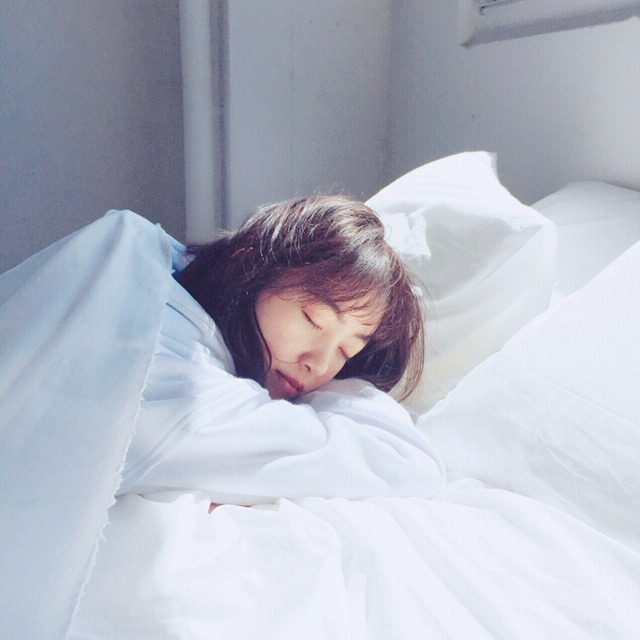
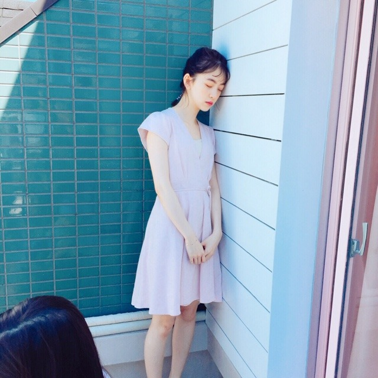

2019/0625Tuear
発売中のarのオフショット♪



いただいた写真を見たら
目をつむってる写真がほとんどでびっくりしました。笑
表紙の写真、本当お気に入りなんだー！
見てくださいましたか？☺︎
昨日は、お仕事終わりにみり愛と蘭世と焼肉を食べてからまだ食べ足りなくてファミレスに行きました。
昨日は、お仕事終わりにみり愛と蘭世と焼肉を食べてからまだ食べ足りなくてファミレスに行きました。
ずっとずっとずっと話してて、家族みたいで、友達のような、心地のいい存在です。
あ、一昨日はお仕事終わりに絢音とサムギョプサルを食べに行きました。
上海から帰ってきて1番に絢音に会えて嬉しかったなぁ。

誰かが落ち込んでいる時、そっとそばに寄り添いあえる関係って素敵だなと改めて(^-^)
ありがとう☺︎
告知
雑誌
「東海ウォーカー」
「TVガイドAlpha EPISODE U」
「装苑」
「別冊spoon.」表紙
「シネマスクエア」
「seventeen」
「日経エンタテイメント！」
「プチコミック」
「BOMB」
「FINEBOYS」
「+act. （プラスアクト）」
「ar」初表紙
「TV station」
「ベツコミ」
「Maybe」
「EX大衆」表紙
「美的」
「BRODY」
「MYOJO」
「アップトゥボーイ」表紙
「週刊ビックコミック スピリッツ」表紙
「cheese!」
「TV navi」
「OVRETURE」
「TV Bros.」表紙
明日「anan」
TV
6/26 17:55～
「テレ東音楽祭2019」
6/26 18:30～、6/27 18:30〜
「まるっと！ぎふ」
6/28 23:40〜
「ネタパレ」
6/29 8:30〜
「にじいろジーン」
6/29 19:00〜
「99人の壁」

地元、岐阜県
NHK岐阜 のまるっと！ぎふ のロケで久しぶりに帰りましたが空気の匂いも温度も変わってなくて安心しました。
懐かしい場所を回り懐かしい思い出を話し、楽しいロケでした
見てね
では
2019/06/25 19:15


コメント(244)
オフショットありがとう（＾ω＾）
オフショットにしとくのは勿体ない可愛さやね、、、
誰かが、側に隣に居るってのはホンマに良いことやしかけがえのないものやね。
オフショットの写真ありがとう！
未央奈めっちゃ可愛い！
Ar見たよ！
メンバーと焼肉良いねえ！
沢山食べたね！
楽しそうで良かった！
またコメントします！
ホットギミック公開が待ち遠しいです！
お知らせできるお仕事沢山だね！
未央奈ちゃん可愛い
ライブ楽しみー
パーカー着てるみおちゃん見ると初ちゃん思い出す♡♡
30日個握行くよ〜！！楽しみ〜☺︎
ブログ更新ありがとう！
いつも輝いてる堀さんを応援してるよ！
体調には気をつけてね！
岐阜に帰ったんですね〜。
4月に丸デブ総本店とマルマンに行ったよ〜。
中華そばうまかった(^_^) 未央奈は行った？？？
頑張って下さいね〜。
パーカー姿の堀ちゃん好き！
テレビも映画も楽しみにしてます！
目をつむってるのは、やっぱ
疲れてるからなんかなー
無理しないでね
落ち込んでるって、そんなに
上海映画祭で最優秀賞とれなかったのが
悔しかったの？
向上心ハンパないっすねっ！
俺にも幼稚園からの付き合いの
親友がいるけど
もう、ここには書けないことを
いくど乗り越えてきたことか笑笑
親友って大切だよねー
これからも岐阜県代表として頑張ってください
ブログ更新ありがとう！
オフショットかわいすぎる！笑
未央奈たちめっちゃたべるやん笑笑
未央奈とあやねのペアめっちゃすき！
二期メンみんな仲良くてほんとうれしい！
雑誌多すぎてほんとすげー！
99人の壁でるんだ！
お題は何にしたの？笑笑
これからも応援してる！
がんばれー！
閉未央奈事、
堀未央奈さんブログ更新ありがとう⁉︎
色んなメディアで引っ張り凧だね⁉︎
映画の公開まであと少し楽しみ〜
そして二期生のみり愛ちゃんと
蘭世ちゃんで焼き肉良いね⁉︎
そこからのファミレスって・・・笑笑
未央奈ちゃんは
二期生のリーダーみたいだね⁉︎(^ ^)
これからも二期生仲良くやって
行って下さい。
閉未央奈好きやよ〜〜
二期生では地方出身が未央奈ちゃんと絢音ちゃんの2人だけだけど2人とも地元のために貢献しようとしててすごいと思う。
私は絢音ちゃんと同じ秋田出身だけど地元を好きだという気持ちを忘れない2人は応援したくなる。
だからこれからも頑張ってください！
質問ですが最近読んでいる本でオススメの本があったら教えてください！
本屋さんに行く前に告知のところをチェックしようと思ってブログページを覗いたら、新しい記事がアップされていて嬉しくなりました︎☺︎
arどのページも可愛すぎて…！昨日アンケート書くのに久しぶりに見返してとっても癒されました⸜(*ˊᵕˋ*)⸝オフショットありがとう！
2冊買ったんだけど、本棚に並べるとタイトルの下に未央奈ちゃんの写真が小さく載っていて、ミニ未央奈ちゃんが2人並んでいるみたいになってとっても可愛いんです♡
メンバーって同期ってかけがえのない存在だよね︎☺︎私も大切な友達と会ってお話するだけで元気になります。
まるっと岐阜は住んでる所で放送されないからすごく残念だけど、いつか岐阜に行ってみたいです︎☺︎お写真の景色もすごくキレイ！
明日のテレ東音楽祭楽しみにしてます！
雑誌もテレビも多くて嬉しいです
すごい毎日が楽しいんだよなぁ笑笑
映画公開楽しみ
めっちゃかわいい
大好きだよ------‼
オフショット載せてくれてありがとうね
やっぱりオフショットも可愛いなー(≧▽≦)
焼き肉羨ましい(>_<)
お腹減ってきたよー(-_-;)
未央奈ちゃん雑誌だけでなく、テレビにもたくさん出るんだね(*≧∀≦*)
すべてチェックします(*´ω｀*)
安心しました。
テレビ楽しみにしてます
ar 買ったよー
堀ちゃんの可愛さにすごい！
ますます可愛く、綺麗になっていくねー
昨日は、ビックコミックスピリッツ買いました？
浴衣姿の堀ちゃんは、反則の可愛さだよー
本当に一番かわいい！
2期生仲良しは、とっても、とっても嬉しい！
乃木中見ていて、やっぱり2期生はいいなー
と思い、応援したくなる！
これからも堀ちゃん、2期生を応援します。
もう少しでホットギミック公開だね！
２９日の横浜舞台挨拶行くからねー
あと３０日の個別握手会も行くよー
これからも堀ちゃんを、全力で応援するからね〜
堀ちゃん、大好きだよー
ar見たよ！
13ページの下のカットとか、フレンドリーなPINKのページの下のカットが好き！
目を閉じてるのも、きれいで可愛すぎる！！
映画公開楽しみ！
試写会は落ちてショックだけど、公開日に見に行かねぇと！！
今週末の握手会では映画の話がしたいな♪
これからも応援しているよ！
チェックします。
arのオフショットどれも良い写真だね。
目をつむってても可愛い！
表紙の写真すごく良いよね。僕も好きだよ。
みり愛と蘭世と絢音と仲良いよね。
BRODYの記事の印象的な放送回でも絢音とみり愛の代打の話してて、良い関係だなって思った。
寄り添い合える仲間がいるって素敵だね。
そして告知が多くてすごい！
今日はOVERTURE買ったよ。
アートな感じのグラビアが面白いね。
すずほりの仲良さそうなインタビューも良かった。
まるっと！ぎふって岐阜以外じゃ見られないのかな？見たいなあ。
では！
arのオフショットありがとう♪可愛いー(^-^)
同期の絆って大切だよね(^O^)!
ほんとに乃木坂は仲良いから、凄いチームワークがしっかりしてるグループだなって尊敬する♪
テレビとかチェックするね＼(^o^)／
大好き(｡･ω･｡)
福岡のトゥモロー⊿
arはごめんね買ってないや。
しかしあい変わらずスタイル良いね✨
個人的にar仲間のずーみんとは会ったりしますか？二人のコラボ見てみたいな☺
乃木中見たよ。
２期生も更なる飛躍を期待してます。
しかし映像懐かしいね(笑)
あと、日々な毎日、確かに誰かそばにいると安心する時はあるね。
俺は半々かな？
仕事といえ岐阜に帰っていたんやね✨
少しはゆっくり出来たんかな？
今は映画公開前もあって、楽しみ勿論やけど少し不安になる時もあるんでは？
大丈夫！
壁はぶち壊せば良いよ。
無理なら急がば回れ✨
堀ちゃんは一人やないんやから☺
頑張り。
ではではまたね。
体調には気をつけてくださいな。
ほなね、堀ちゃん☺
オフショットいっぱいで嬉しいなー♪
目をつむってる写真とっても癒されました！
みおちゃんの写真はずっと見てしまいます♡
ar表紙はアート作品のクオリティーですね！
実は密かにお部屋に飾ってありますよー♡
焼肉も食べてスタミナ付けてるのですねー！
絢音ちゃんものぎおびでお話してましたよ☆
みおちゃんに雑誌でも毎日会えて嬉しいし、
TV番組も沢山見られてとっても嬉しいです♡
岐阜でロケがあって本当に良かったですね！
故郷は変わらず迎えてくれて安心ですよね◎
みおちゃんはどんどん綺麗になってるから、、
とってもドキドキしてしまいますよ～☺
目をつむってるのは、やっぱ
疲れてるからなんかなー
無理しないでね
未央奈ちゃんキメ顔待ってます！
乃木坂ちゃん達のはオフショットって
言っても可愛いからね。
気抜いててもこのクオリティ。
口内炎と食欲は関係がないようですね
でも食べられるって元気な証拠。
読んでる僕達もほっとします。
告知、雑誌に加え、ＴＶも増えたね。
真顔で「聴いて」はふるえる～。
いつもブログ更新ありがとうございます。
岐阜の綺麗な景色での写真ありがとう。
岐阜のおすすめスポットがあったら教えて下さい。またのブログ待ってます。
乃木坂文庫予約したー
arの堀ちゃんとても可愛かったよ。
オフショットもとても素敵な写真ばかりだね。
お肉美味しそうだね。
コメントする